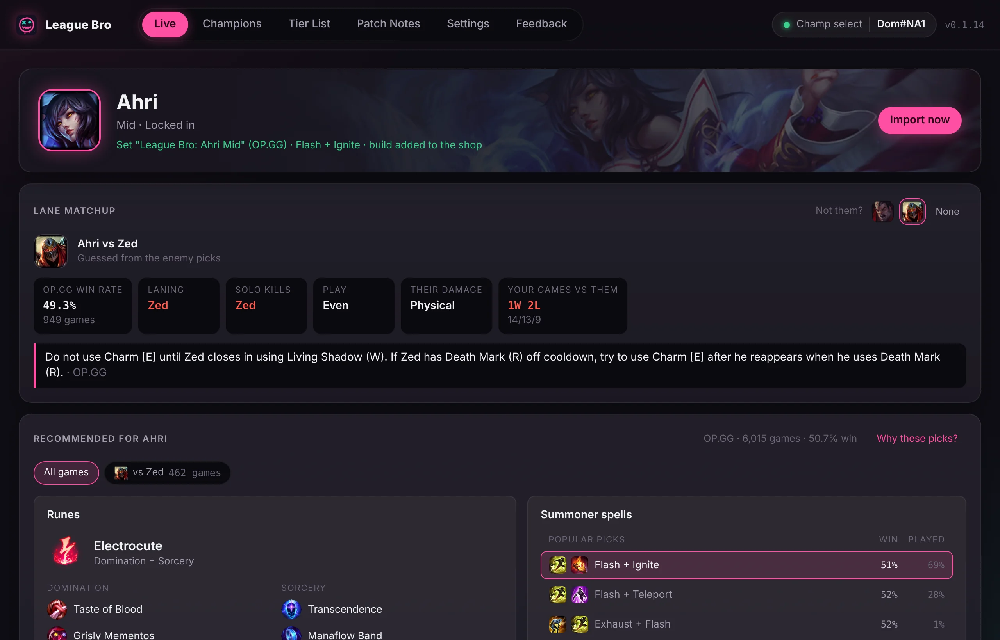
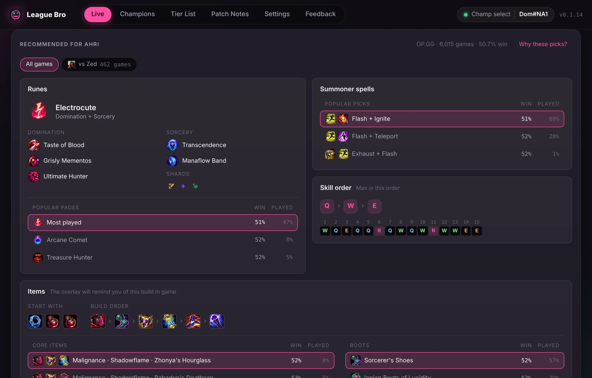
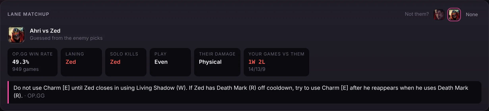
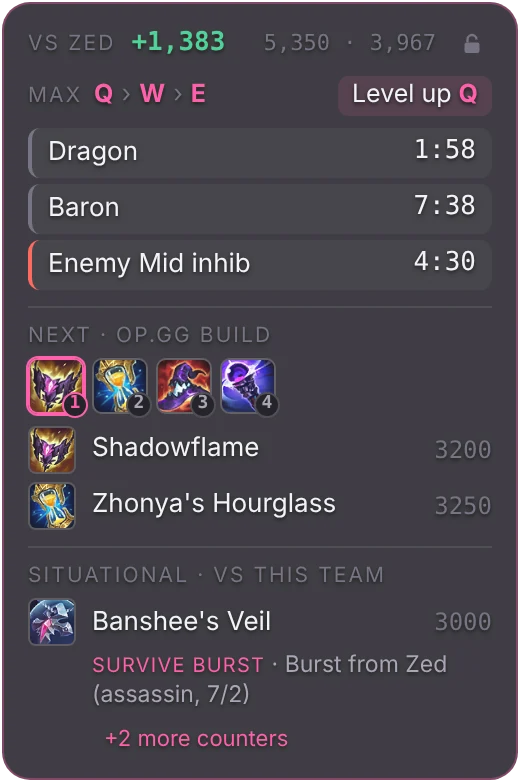
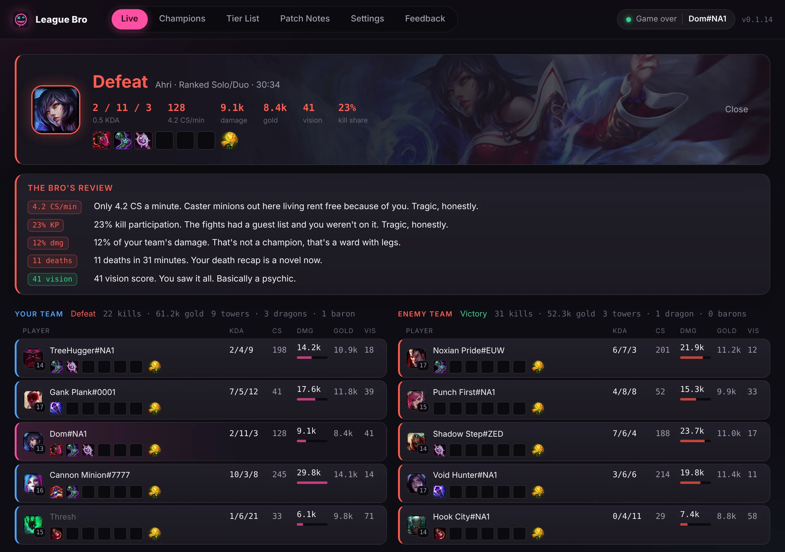
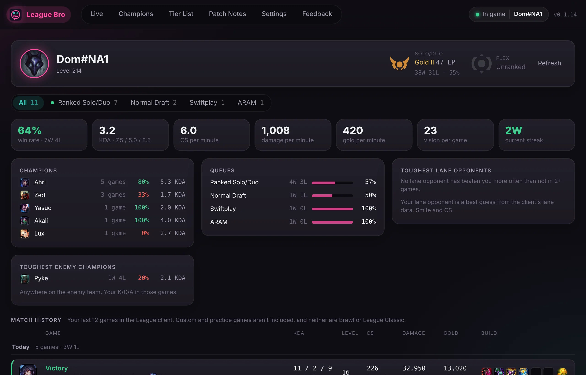
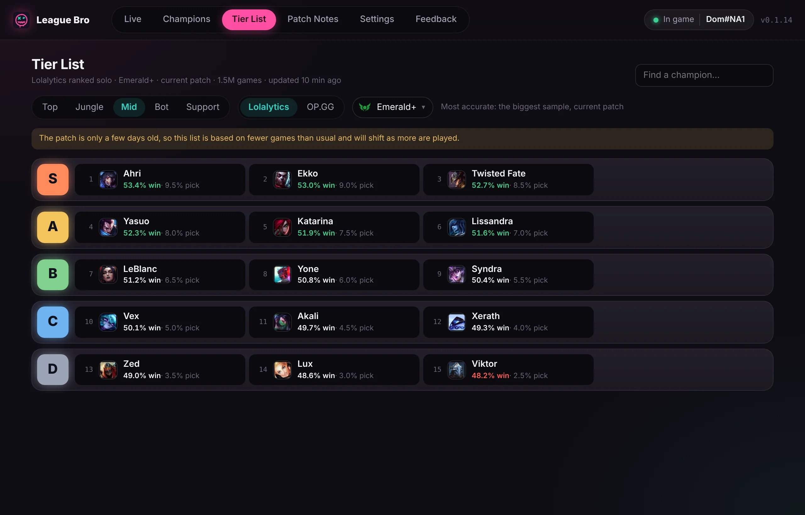

League Bro
A small League of Legends companion for Windows. It sets your runes and build in champ select, shows your lane matchup, keeps a little overlay of timers in game, and sums up the game when it ends.
It's a hobby project by a League player, built for friends. It's free and open source, with no ads and no account, and there's nothing to buy.
League Bro runs on Windows only. Open this page on the PC you play League on.

What it does
It runs in the background while League is open. These screenshots are from the app, with made-up demo data.
Runes and build when you lock in
Your rune page, summoner spells and in-game shop build are set as soon as you lock in, from OP.GG's ranked stats. Flash stays on the key you use, and your own pages are never touched.
If OP.GG has other popular choices, you can switch to one with a click.

Lane matchup
Once the enemy team picks, League Bro works out who's probably in your lane and shows how it goes: the win rate, who usually wins lane and gets solo kills, the damage they deal, a lane tip, and your own record against them.
You can switch to the runes and build people use against that champion. If it guessed the wrong opponent, pick the right one.

In-game overlay
Your item value against your lane opponent, Dragon, Baron and inhibitor timers, which ability to level next, the next items to buy, and a counter item for what the enemy team is doing.
It starts unlocked, so you can drag it where you want it. Click the padlock to lock it in place, and clicks go straight through it to the game.

Post-game summary
Your result, KDA, CS per minute, damage, gold, vision and kill share, with both teams' scoreboards side by side.
"The Bro's review" pokes fun at your worst stats and cheers the good ones. It's meant as friendly banter with no swearing, and you can turn it off in Settings.

Profile and match history
Your Solo/Duo and Flex rank with its crest, win rate, KDA, CS, damage and gold per minute, your best champions and toughest opponents, and every recent match with its full scoreboard.
Enter your Riot ID and it works even when League is closed.

Champions, tier list and patch notes
Runes, spells, skill order and the full build for every champion and role, with a short reason for each pick. New to a champion? Its guide shows every ability, plus Riot's tips for playing as and against it.
There's also a tier list for every role, from Lolalytics or OP.GG, and the latest patch notes sorted into buffs and nerfs.

What it doesn't do
- No ads, no account, no tracking, and nothing running when League isn't open.
- It never reads game memory, injects into the game or presses keys for you.
- No enemy cooldown or ultimate timers, and no hidden names in ranked champ select. Riot doesn't allow them.
Installing
After that it updates itself: a banner shows when there's a new version, and your version is shown next to your name at the top of the window.
-
Download and run it
Run the installer you downloaded. It installs for your Windows account only, so it doesn't ask for admin rights.
-
Allow it past SmartScreen
League Bro isn't code-signed yet, so Windows warns about it the first time. Click More info, then Run anyway.
-
Set League to Borderless
In League, open Settings, then Video, and set Window Mode to Borderless. In Fullscreen the game covers the overlay.
Questions
If yours isn't here, open an issue on GitHub.
Can I get banned for using it?
League Bro works the same way as well-known companion apps. It only uses the League client's own local interface and Riot's official in-game data, and it skips the features Riot has banned, like enemy ultimate timers.
Its registration with Riot is pending, and nobody but Riot can promise anything about bans. You use it at your own risk.
Why does Windows say it's unrecognized?
Windows trusts apps that are signed with a paid certificate and downloaded by lots of people. League Bro isn't signed yet. The installer is built from the public source code on GitHub, so you can see exactly what's in it.
The overlay doesn't show in game
Set League's Window Mode to Borderless or Windowed. Fullscreen draws over every other window. Also check that "Show the in-game overlay" is on in League Bro's Settings.
How do I move the overlay?
It starts unlocked each game, so just drag it where you want it. Click the padlock in its top-right corner to lock it in place; clicks then go through it to the game. League Bro remembers where you put it.
Can I turn off the roasts?
Yes. In Settings, under Post-game, turn off Roasts. The rest of the post-game summary stays.
Which version do I have?
It's shown at the top right of the window, next to your name. League Bro updates itself, and shows a banner when a new version is ready.
Where do the recommendations come from?
OP.GG's ranked stats for your champion and role. For rare picks without enough games, it uses the League client's own suggestion.
I had League Buddy installed
League Buddy is the old name. Install League Bro, then uninstall League Buddy from Windows Settings, Apps, Installed apps, so only one copy manages your rune page. In the League client, delete the leftover "League Buddy" rune page and item set.
How do I uninstall it?
Windows Settings, Apps, Installed apps, League Bro, Uninstall.
About
League Bro is made in spare time by a League player, mostly for friends. It's free and the source code is on GitHub. Found a bug or have an idea? Use the Feedback tab in the app or open an issue.